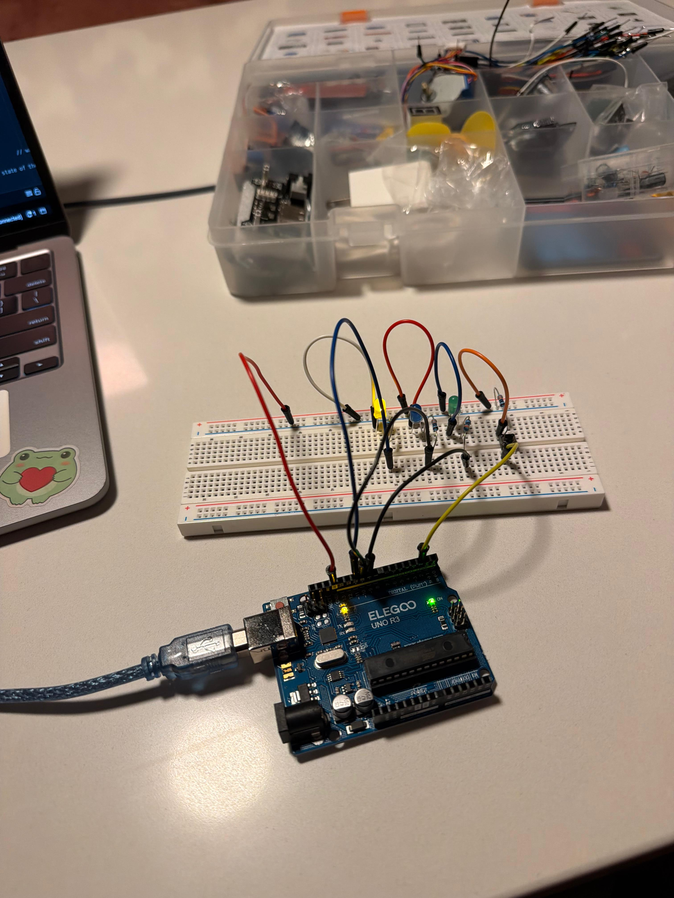
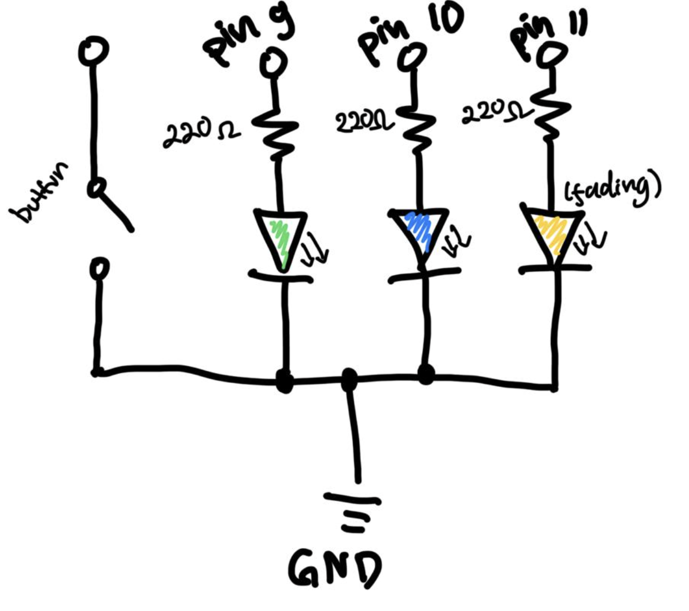
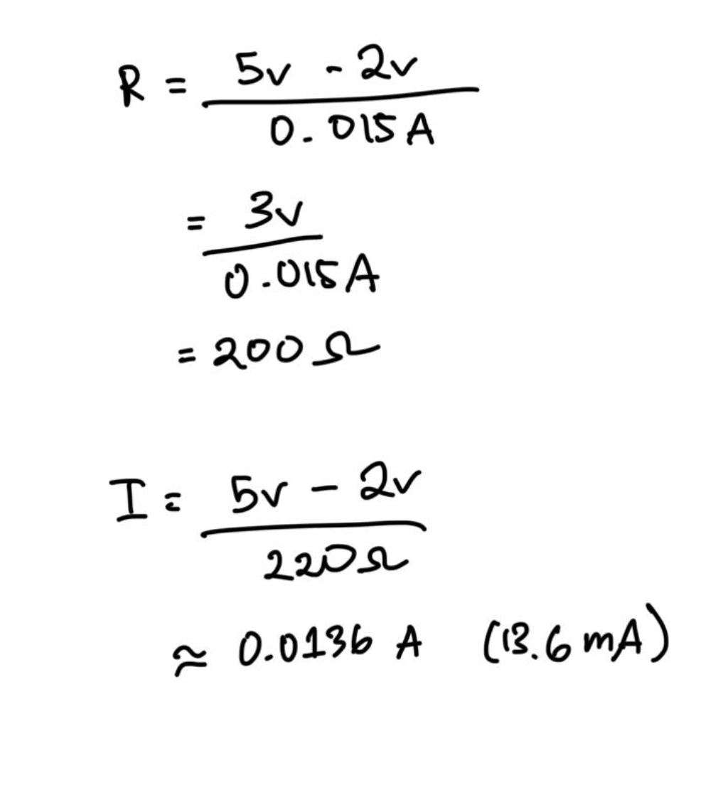
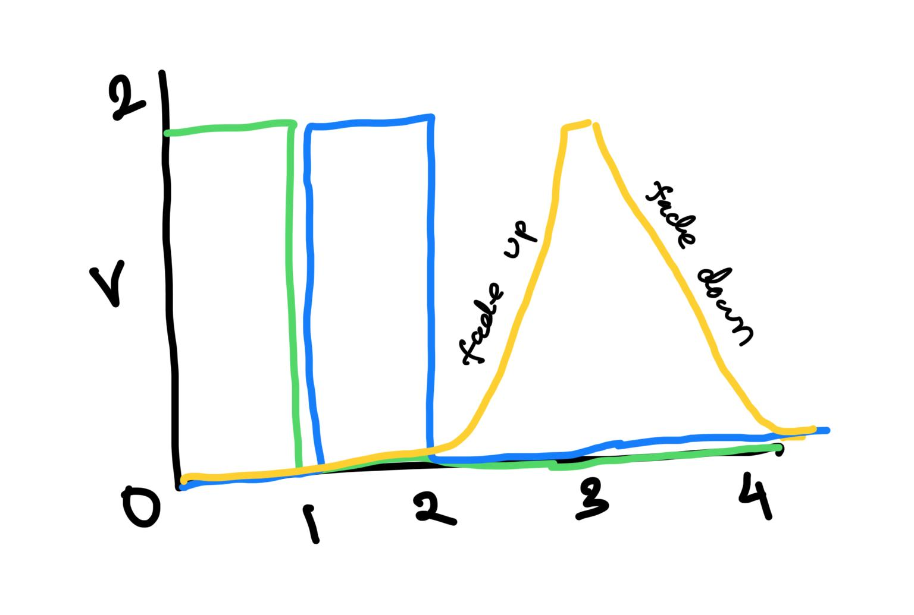

This GIF shows the programmed circuit working in real time. When the button is pressed, it starts a pattern where the green, blue, and yellow LEDs light up independently, with the yellow LED gradually fading in and out.
This GIF shows the programmed circuit working in real time. When the button is pressed, it starts a pattern where the green, blue, and yellow LEDs light up independently, with the yellow LED gradually fading in and out.
// Stores the Arduino pin connected to the first LED.
const int led1 = 9;
// Stores the Arduino pin connected to the second LED.
const int led2 = 10;
// Stores the Arduino pin connected to the fading LED.
const int led3 = 11;
// Stores the Arduino pin connected to the pushbutton.
const int buttonPin = 2;
// Stores the current button state.
int buttonState = HIGH;
// Stores the previous button state.
int lastButtonState = HIGH;
// Stores whether the light animation is turned on.
bool powerOn = false;
// Runs once when the Arduino first turns on.
void setup()
{
// Sets LED 1's pin as an output.
pinMode(led1, OUTPUT);
// Sets LED 2's pin as an output.
pinMode(led2, OUTPUT);
// Sets LED 3's pin as an output.
pinMode(led3, OUTPUT);
// Uses Arduino's internal pull-up resistor for the button.
pinMode(buttonPin, INPUT_PULLUP);
}
// Repeats continuously while the Arduino is powered.
void loop()
{
// Reads the current state of the button.
buttonState = digitalRead(buttonPin);
// Checks whether the button was just pressed.
if (buttonState == LOW && lastButtonState == HIGH)
{
// Switches the animation between on and off.
powerOn = !powerOn;
// Adds a short delay to reduce button bouncing.
delay(50);
}
// Saves the current state for the next loop.
lastButtonState = buttonState;
// Checks whether the animation is turned on.
if (powerOn == true)
{
// Turns LED 1 on.
digitalWrite(led1, HIGH);
// Waits for 200 milliseconds.
delay(200);
// Turns LED 1 off.
digitalWrite(led1, LOW);
// Turns LED 2 on.
digitalWrite(led2, HIGH);
// Waits for 200 milliseconds.
delay(200);
// Turns LED 2 off.
digitalWrite(led2, LOW);
// Gradually increases LED 3's brightness.
for (int brightness = 0; brightness <= 255; brightness += 5)
{
// Sets LED 3's brightness.
analogWrite(led3, brightness);
// Waits briefly so the fade can be seen.
delay(20);
}
// Gradually decreases LED 3's brightness.
for (int brightness = 255; brightness >= 0; brightness -= 5)
{
// Sets LED 3's brightness.
analogWrite(led3, brightness);
// Waits briefly so the fade can be seen.
delay(20);
}
// Makes sure LED 3 is off.
analogWrite(led3, 0);
}
// Runs when the animation is turned off.
else
{
// Turns LED 1 off.
digitalWrite(led1, LOW);
// Turns LED 2 off.
digitalWrite(led2, LOW);
// Turns LED 3 off.
analogWrite(led3, 0);
}
}
This image shows my Arduino circuit with three LEDs, resistors, and a pushbutton connected on a breadboard. The button controls the light pattern, while the resistors help limit the current flowing through the LEDs.


This schematic shows three LEDs connected to Arduino pins 9, 10, and 11, with pin 11 controlling the LED that fades. Each LED has its own 220 Ω resistor to limit the current, and all three LEDs connect back to a shared GND line. The resistor calculation uses Ohm's Law: with a 5 V Arduino output, about a 2 V LED voltage drop, and a target current of 15 mA, the calculated resistance is 200 Ω, so a standard 220 Ω resistor was chosen instead. Using 220 Ω gives an actual current of about 13.6 mA per LED, which keeps the LEDs at a safe current level. The button is also shown as the input that controls when the light pattern starts or stops.

The resistor calculation uses Ohm's Law with a 5 V Arduino output, about a 2 V LED voltage drop, and a target current of 15 mA, the calculated resistance is 200 Ω, so a standard 220 Ω resistor was chosen instead. Using 220 Ω gives an actual current of about 13.6 mA per LED, which keeps the LEDs at a safe current level. The button is also shown as the input that controls when the light pattern starts or stops.

This graph shows how the three LEDs behave during one full light sequence. The green LED turns on first and stays bright for a short amount of time before turning off, then the blue LED turns on and does the same thing. After those two LEDs finish, the yellow LED gradually increases in brightness, reaches its brightest point, and then slowly fades back down. This shows the difference between using digitalWrite() for the green and blue LEDs, which are either fully on or off, and analogWrite() for the yellow LED, which allows it to fade smoothly.
I measured the voltage across my blue LED while it was on and got 2.53 V. The theoretical forward voltage I was expecting was about 2.3 V, so my measured value was slightly higher by about 0.23 V. This is still fairly close, since the forward voltage can vary a little depending on the specific LED and the current flowing through it.
If all three LEDs were on at the same time, they would draw about 40.8 mA total, since each LED uses around 13.6 mA. This is still below the Arduino's total current limit, so it is within a safe range for the board. If I powered the circuit with a 1200 mAh battery, it would theoretically last around 29.4 hours if the LEDs stayed on continuously. The actual battery life would probably be a little shorter because the Arduino itself also uses power, and the LEDs in my project are not always on at full brightness the entire time.
For my pushbutton, I used the Arduino's built- in pull-up resistor through INPUT_PULLUP instead of a dding a separate external resistor. I originally tried using an external resistor, but I was having trouble getting the button to work properly. I asked about this in class, and my professor said it was okay to use the built-in resistor as long as I included a note explaining it. Because of this setup, my button is connected between pin 2 and GND, and the button reads LOW when pressed and HIGH when released!